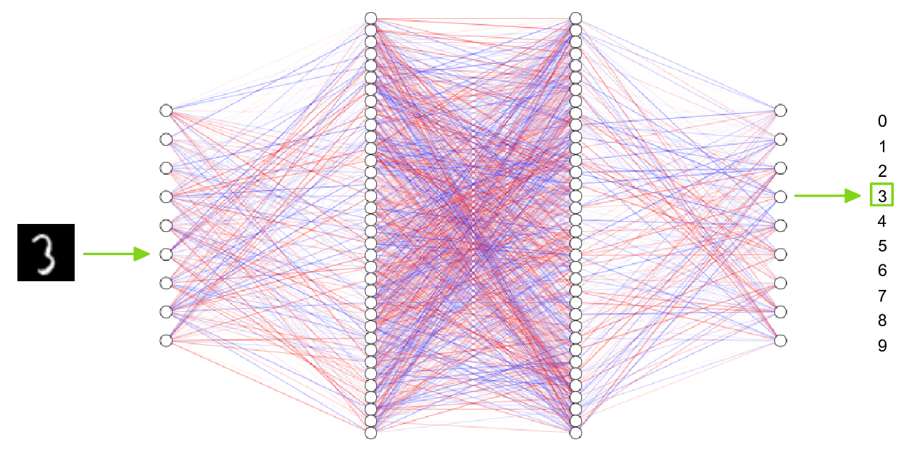

DL
Практические задания по глубокому обучению.
-
Аугментация текста и изображений
Научиться проектировать аугментации как проверяемую гипотезу: выбрать преобразования, сохраняющие смысл метки, встроить их только в train-пайплайн и измерить влияние на устойчивость и обобщение модели.
Выполни два небольших эксперимента — один для изображений и один для текста — в Jupyter-ноутбуке или репозитории. Исходные данные и крупные артефакты не коммить. Для каждого эксперимента нужен baseline без аугментаций и хотя бы одна контролируемая версия с ними.
МетодыRandomRotation RandomAffine RandomCrop ColorJitter RandomHorizontalFlip Back-translation Synonym replacement / deletion- Данные и задача: используй CIFAR-10 или собственный размеченный набор; укажи классы, размер train/validation/test и смысл метки. Покажи до/после не менее десяти преобразований разных классов.
- Безопасность метки: для каждого преобразования объясни, почему оно допустимо. Например, горизонтальный flip может быть допустим для животных, но опасен для текста, дорожных знаков или медицинских изображений; crop не должен вырезать единственный объект.
- Pipeline: собери отдельные transforms: аугментации и нормализация для train, только детерминированная нормализация для validation/test. Зафиксируй seed и параметры силы преобразований.
- Контролируемый эксперимент: обучи одну и ту же небольшую CNN без аугментаций, с лёгкой и с более сильной политикой. Сравни validation/test accuracy, loss, разрыв train–validation и типичные ошибки. Не выбирай силу аугментаций по test.
- Устойчивость: создай фиксированный набор реалистичных искажений test-изображений и сравни качество baseline и аугментированной модели. Раздели улучшение чистой test-метрики и улучшение robustness.
- Данные и задача: используй небольшой размеченный текстовый датасет, например Disaster Tweets из задачи по NLP. Зафиксируй, что именно предсказывается, и сформируй train/validation/test до генерации новых примеров.
- Аугментации: примени
nlpaug, NL-Augmenter или собственные правила: замена синонимов, удаление/вставка слов, paraphrase или back-translation. Покажи минимум 20 исходных и преобразованных пар. - Контроль смысла: вручную разметь, сохранила ли аугментация метку, хотя бы для 50 случайных примеров. Отбрось опасные преобразования, особенно меняющие отрицание, имена, числа, географию или факт катастрофы; опиши долю отброшенных примеров.
- Оценка: сравни классификатор без аугментаций и с наиболее безопасной политикой по validation/test $F_1$. Проверь отдельно результат на коротких текстах и на исходно редком классе; объясни, если аугментация ухудшила качество.
Почему аугментацию нельзя применять к validation и test?
Эти выборки имитируют новые исходные объекты. Случайные изменения делают метрику нестабильной и меняют смысл честной проверки.
Когда аугментация вносит label noise?
Когда преобразование меняет объект или его смысл так, что прежняя метка становится неверной, например меняет смысл текста или удаляет объект с изображения.
Почему больше аугментаций не всегда лучше?
Слишком сильные или нереалистичные изменения сдвигают train-распределение, повышают шум и могут ухудшить качество на реальных данных.
-
Self-Attention: реализация на Python
Реализовать scaled dot-product self-attention по формулам, проверить численную корректность и увидеть, как padding и causal mask изменяют доступные токенам позиции.
Подойдёт один Jupyter-ноутбук или небольшой PyTorch-проект. Первая версия не должна вызывать
nn.MultiheadAttentionилиF.scaled_dot_product_attention; эти функции разрешены только как эталон для теста.- Контракт: реализуй
scaled_dot_product_attention(q, k, v, mask=None)для батчей формы(batch, heads, seq_len, d_k). Проверь совместимость размерностей, возвращай и выход, и матрицу attention weights. - Формулы: из входа $X \in \mathbb{R}^{B \times T \times d_{model}}$ получи $Q=XW_Q$, $K=XW_K$, $V=XW_V$, вычисли $\mathrm{softmax}(QK^\top / \sqrt{d_k})V$. Перед
softmaxвычти максимум по строке либо используйtorch.softmax, чтобы избежать численной неустойчивости. - Маски: реализуй padding mask и causal mask. Недоступным позициям добавляй большое отрицательное значение до softmax; после маски проверь, что их веса близки к нулю, а сумма весов по последней оси равна единице для допустимых строк.
- Проверки: на маленьком детерминированном тензоре вручную проверь одну строку весов и выход. Сравни выход и градиенты своей реализации с
torch.nn.functional.scaled_dot_product_attentionпри одинаковыхQ,K,Vи маске; зафиксируй допустимую погрешностьallclose. - Визуализация: для короткой последовательности из 5–10 токенов отрисуй heatmap весов без маски и с causal mask, подпиши query/key оси. Объясни, почему в causal-режиме токен не видит будущие позиции.
- Расширение: реализуй multi-head attention: разбиение
d_modelна головы, объединение выходов и проекцию $W_O$. Сравни одну и несколько голов по форме тензоров и числу параметров, не утверждая, что головы автоматически приобретают интерпретируемые роли.
- Добавь тесты на форму тензоров, сумму весов, маску,
seq_len=1и ошибочные размеры. - Оцени память матрицы внимания $O(T^2)$ и объясни, почему длинный контекст становится дорогим.
Зачем делить логиты на $\sqrt{d_k}$?
При большом $d_k$ скалярные произведения растут, softmax насыщается и градиенты становятся менее полезными. Масштабирование удерживает логиты в стабильном диапазоне.
Чем padding mask отличается от causal mask?
Padding mask скрывает технические пустые позиции, а causal mask запрещает доступ к будущим токенам и нужна для авторегрессионной генерации.
Почему self-attention имеет квадратичную сложность по длине?
Каждая из $T$ query-позиций сравнивается с каждой из $T$ key-позиций, поэтому матрица весов имеет размер $T \times T$.
- Контракт: реализуй
-
MNIST: MLP и CNN на PyTorch
Построить воспроизводимый PyTorch-эксперимент для классификации рукописных цифр: сравнить MLP и CNN, организовать честные train/validation/test-этапы, диагностировать обучение по кривым и ошибкам классов.
Используй MNIST через torchvision.datasets.MNIST либо Kaggle. Достаточно Jupyter-ноутбука или небольшого репозитория с
train.py; данные и веса моделей не коммить. Зафиксируй версии библиотек, seed и устройство CPU/GPU.
МетрикиAccuracy Precision / Recall / $F_1$ по классам Confusion Matrix ROC-AUC one-vs-rest (опционально)- Данные: покажи форму тензоров и диапазон пикселей, по одному примеру каждой цифры и распределение классов. Раздели исходный train на train/validation со стратификацией; официальный test не используй до окончательного выбора модели.
- Preprocessing: нормализуй изображения по статистикам train. Создай отдельные transforms для train и validation/test; объясни, почему аугментации не должны попадать в validation/test. Для основного сравнения не меняй test-процедуру между моделями.
- MLP baseline: реализуй MLP, принимающий развёрнутое изображение из 784 признаков. Явно задай размеры слоёв, активации, dropout и функцию потерь
CrossEntropyLoss; не применяйsoftmaxперед этим loss. - CNN: реализуй собственный
nn.Moduleс минимум двумя блокамиConv2d+ активация + pooling, затем classifier head. Сравни число параметров MLP и CNN и объясни, почему CNN использует пространственную структуру изображения. - Обучение: напиши цикл train/eval с
model.train()/model.eval()иtorch.no_grad()для оценки. На каждой эпохе логируй train/validation loss, accuracy, learning rate и время; сохрани лучший checkpoint по validation loss или accuracy и документируй правило выбора. - Эксперименты: сравни минимум MLP, CNN и одну регуляризованную/аугментированную версию CNN. Измени за один эксперимент только одну значимую гипотезу: optimizer, learning rate, weight decay, dropout, scheduler или аугментацию. Сведи параметры и validation-результаты в таблицу.
- Финальная оценка: один раз проверь выбранный checkpoint на test. Построй classification report, confusion matrix и не менее десяти примеров ошибок с вероятностями/логитами модели; опиши повторяющиеся ошибки.
- Используй TensorBoard или Weights & Biases для логов, но не коммить API-ключи.
- В README/ноутбуке запиши команды запуска, seed, лучшую конфигурацию и ограничения: MNIST не отражает сложность реального production-CV.
Почему нельзя выбирать модель по test-метрике?
Повторный выбор по test адаптирует решение к тестовой выборке и завышает ожидаемое качество. Для выбора нужен validation, а test используется один раз.
Почему
CrossEntropyLossпринимает логиты?Функция сама выполняет численно устойчивый
log_softmax; дополнительныйsoftmaxдо loss ухудшает вычисления и меняет ожидаемый вход.Почему CNN обычно лучше MLP на изображениях?
Свёртки используют локальные связи и общие веса, поэтому распознают одинаковый паттерн в разных позициях и требуют меньше параметров.